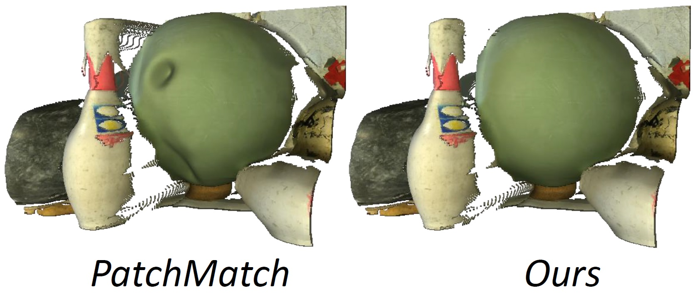
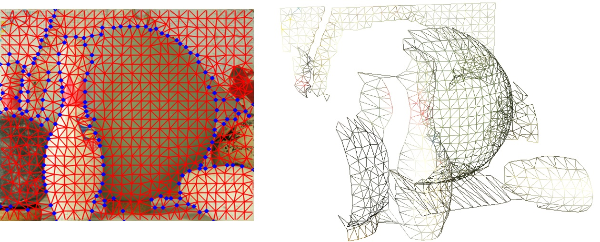
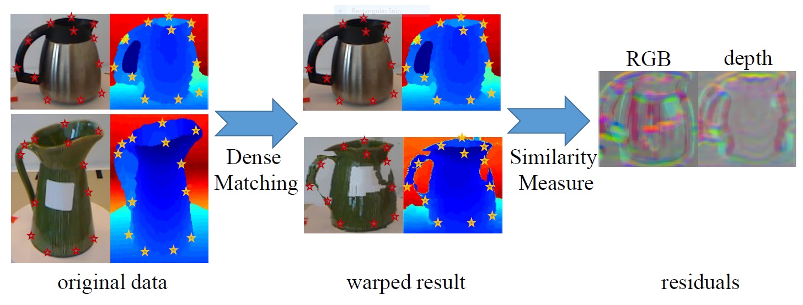

I am a joint PhD candidate between Sun Yat-Sen University (SYSU) and Microsoft Research Asia (MSRA) since September, 2012, co-supervised by Prof. Hongyang Chao from SYSU and Dr. Yong Rui from MSRA. I also work closely with Zhiwei Li, who is currently my mentor and a Lead Researcher from the Multimedia Search and Mining Group of MSRA. My current research interests are on Stereo Matching and Multiview Reconstruction for Image Based Rendering.
|  | Chi Zhang, Zhiwei Li, Rui Cai, Hongyang Chao, Yong Rui. As-Rigid-As-Possible Stereo under Second Order Smoothness Priors. European Conference on Computer Vision (ECCV), 2014. [PDF] [Poster] |
| Ming Yang, Hongyang Chao, Chi Zhang, Jun Guo, Lu Yuan, Jian Sun. Effective Clipart Image Vectorization Through Direct Optimization of Bezigons. IEEE Transactions on Visualization and Computer Graphics, (TVCG), 2015. [PDF] [Appendix] | |
|  | Chi Zhang, Zhiwei Li, Yanhua Cheng, Rui Cai, Hongyang Chao, Yong Rui. MeshStereo: A Global Stereo Model with Mesh Alignment Regularization for View Interpolation. International Conference on Computer Vision (ICCV), 2015. |
|  | Yanhua Cheng, Rui Cai, Chi Zhang, Zhiwei Li, Xin Zhao, Kaiqi Huang, Yong Rui. Query Adaptive Similarity Measure for RGB-D Object Recognition. International Conference on Computer Vision (ICCV), 2015. |